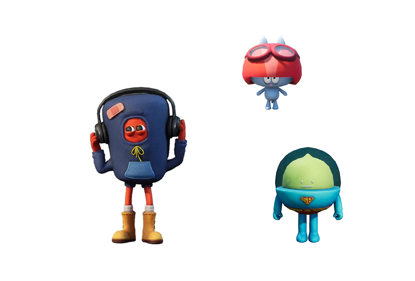

친구를 데려와 구경하세요
또 다른 세계 슈퍼플랫에서 사귄
취미 맞는 친구들을 만나 보세요!
나만의 공간이
미술관이 되고
상상이 되고
캠퍼스가 되는곳
전시를 둘러보고, 공연을 즐기고,
사람들이 모인 곳으로 향합니다.
정해진 길은 없습니다. 마음 가는 대로 돌아다녀 보세요.
만나고 싶던 캐릭터가 같은 공간에 서있습니다.
무슨 이야기든 괜찮습니다. 오늘 있었던 일도, 그냥 떠오른 질문도요.
혼자 걸어도 되고, 같이 걸어도 됩니다.
또 다른 세계 슈퍼플랫에서 사귄
취미 맞는 친구들을 만나 보세요!
퀴즈쇼, 라이브 이벤트, 영화관람까지!
슈퍼타운 주민들과 함께 다양한 이벤트에 참여해 보세요
